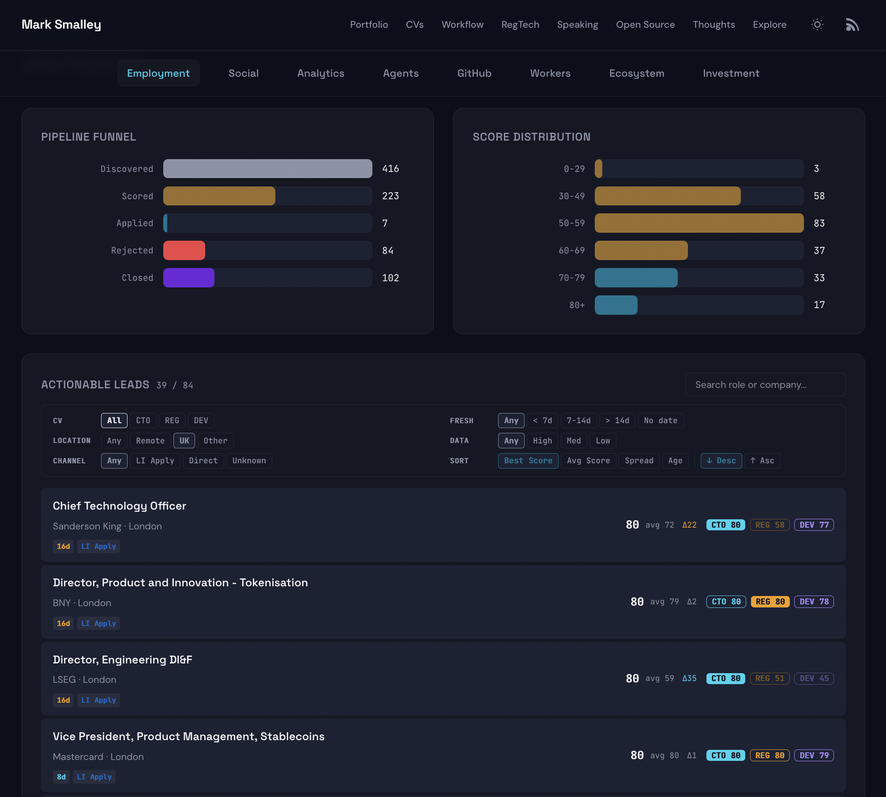

Most people start a job search with a spreadsheet and a LinkedIn tab. I already had the infrastructure. Autonomous agents, a scoring pipeline, content generation, deployment automation. All of it built to serve an unfunded side project in the tabletop gaming space. The system worked. The problem was that it ran on tokens, and tokens cost money I wasn't earning.
So I redirected those resources toward finding work. The fastest path would have been blasting out 200 generic applications. Instead, I started building a matching engine. One that parses job descriptions, scores them against proof points extracted directly from your CV, and surfaces which roles genuinely fit your experience. Not keyword matching. Structural alignment with confidence levels.

This creates an obvious paradox: every hour spent improving the system is an hour not spent applying through it. The system gets better while the bank account gets worse. At some point the investment pays off in higher-quality applications with lower effort per submission. The question is whether that crossover happens before the money runs out.
This article documents the engineering decisions in real time. Each section represents a problem encountered, diagnosed, and solved. The system is live, the code is open, and the job search is real. Not just the code: the changelog, the scoring logic, the architectural dead-ends, the daily progress. Everything that most people would keep behind a private repo until it's polished, published here while it's still rough and actively evolving.
The Scoring Problem
Most job boards give you a binary: "match" or "no match." LinkedIn's algorithm is a black box. The few platforms that show a score give you one number with no explanation of what drove it or how to improve your chances.
The first version of my scorer was simple: extract requirements from a job description, match them against a pool of proof points from my career history, calculate a percentage. It worked well enough to rank 500+ jobs and surface the top 10% worth applying to.
Then the patterns started suggesting I needed more than one CV.
The Three-CV Problem
After scoring hundreds of jobs, the matches clustered into three distinct shapes. Leadership roles lit up one set of proof points. Developer-facing roles lit up a completely different set. Compliance-adjacent roles activated a third. The same career, but three different stories depending on who was reading. So the system suggested three: CTO/Head of Engineering, DevRel/Developer Advocacy, and RegTech/Compliance. The CTO version leads with "founded Moonshot team, scaled 1 to 10 engineers, secured DraperVC investment." The DevRel version leads with "TEDx speaker, 59K SlideShare views, SDK documentation, hackathon infrastructure." The RegTech version leads with "first company in SC Malaysia regulatory sandbox, built KYC/AML pipelines, Deloitte Top 50 Global RegTech."
The first tri-score implementation scored each job three times using the same proof pool with keyword-based multipliers. CTO keywords ("led", "managed", "founded") boosted proof points when scoring for the CTO variant. DevRel keywords ("documentation", "community", "speaking") boosted for DevRel. The theory was sound. The results were not.
The Identical Scoring Problem
A large percentage of jobs returned identical scores across all three CVs. A smart contract engineering role scored the same whether matched against a CTO CV, a DevRel CV, or a RegTech CV. These are not generic roles. A smart contract engineer should score differently on a CTO CV (architecture, system design) versus a DevRel CV (SDK documentation, developer education). The fact that they didn't meant the system was fundamentally broken.
The diagnosis took longer than the fix. The keyword multiplier approach failed because neutral technical language ("5+ years Solidity", "smart contract auditing", "deploy to mainnet") doesn't contain CTO keywords, DevRel keywords, OR RegTech keywords. When no multiplier fires, all three variants score identically against the same proof pool.
The system was treating three CVs as one CV with three colour filters.
The Architectural Fix
The correct model is obvious in hindsight: each CV IS its own proof pool. The CTO CV emphasises leadership decisions. The DevRel CV emphasises community output. The RegTech CV emphasises regulatory credentials. They contain different bullet points from the same career history, written with different audiences in mind.
The fix: parse each CV's HTML directly and extract its bullet points as that variant's proof points. When scoring for CTO, match against what the CTO CV actually says. When scoring for DevRel, match against what the DevRel CV says. No keywords needed. The differentiation is structural.
Results after the rewrite:
- Average score spread across variants: 10.8 points (was near zero for problematic cases)
- 54 jobs with 21+ point spread (clear single-variant winners)
- DevRel role test: CTO 53, RegTech 35, DevRel 75 (40-point spread)
- CTO role test: CTO 88, RegTech 76, DevRel 73 (15-point spread)
- Generic backend role: CTO 76, RegTech 70, DevRel 73 (6-point spread, correctly narrow)
The narrow spreads are as informative as the wide ones. A 6-point spread on a generic backend engineering role tells you something different: this isn't a strong fit for any of your variants. When no version of your experience clearly outperforms the others, either the role isn't what you're looking for, or the engine doesn't have enough data to work with.
The Confidence Problem
A vast majority of those that scored identically shared a common pattern: either no job description at all, or poorly written ones. When a job listing has only a title and company name, the scorer extracts 2-3 "requirements" from that minimal text, matches them against proof points, and produces a number that looks like a score but carries no information.
A score built on 2 data points is not the same thing as a score built on 12. The system now reports confidence alongside the score: high (8+ requirements, 4+ matches), medium (5+ requirements), or low (fewer than 5). Low-confidence scores are flagged in the dashboard and sorted below high-confidence leads at the same score level.
This is more useful than suppressing them entirely. A low-confidence 85 still tells you "this role's title and skills are highly aligned" even if you can't yet confirm the full description matches. It becomes a signal to fetch the full JD and re-score, not a signal to apply blindly.
The Expansion Map Problem
The CV-derived proof pools solved the differentiation problem but introduced a subtler one. A job description might say "5+ years Solidity." My CTO CV doesn't use the word "Solidity" because it talks about architecture and team leadership. But it does say "smart contract" and "EVM." These are obviously related. The system needs to know that.
The first implementation used a single global expansion map: "blockchain" expands to ["bitcoin", "ethereum", "web3", "crypto"...]. Every variant used the same map. This is the same mistake as the shared proof pool, just one level deeper. When a CTO reads "blockchain" they think "architecture, protocol design, infrastructure." When a DevRel reads it they think "documentation, tutorials, developer education." The semantic neighbourhood of a keyword depends on who's reading it.
The fix: three variant-specific expansion maps. The CTO map expands "team" to ["hiring", "managed", "moonshot", "sprint"]. The DevRel map expands it to ["community", "contributors", "maintainers", "ambassadors"]. The RegTech map expands "compliance" to ["kyc", "aml", "sandbox", "securities commission", "fca", "mica"]. Each map reflects how that person actually talks about their work.
This layered approach (variant-specific proof pools + variant-specific semantic expansion) means two jobs with identical keywords can score differently because the system understands that "team management" means different things depending on whether you're hiring engineers or coordinating a developer community. The scores finally reflect human judgement about fit, not just keyword overlap.
From Personal Tool to Open System
Here's what makes this more than a personal job search: the architecture generalises immediately. I started with one CV. After scoring hundreds of jobs against it, patterns emerged. Certain proof points dominated matches for leadership roles. Different ones dominated for developer-facing roles. Others lit up for compliance-adjacent positions. The data suggested I'd get better results with targeted variants. So the system suggested three.
That turned into the testing strategy. Scoring all three against the same job descriptions exposed every failure mode that a single-CV user would never trigger. Identical scores, missing semantic context, confidence without data. Each failure made the system more robust for the single-CV case. And it raised a product question: could the system itself identify when a user's experience clusters into distinct role types, and suggest they'd benefit from a variant?
A future user uploads one CV. The system parses their proof points from the document directly. No manual tagging, no keyword configuration, no profile form to fill out. Over time, as it scores enough jobs, it might surface the same insight: "your experience matches these 40 roles one way and those 30 a different way. Here's where a second CV would outperform your first." The quality of scoring scales with the quality of their CV writing, and the system teaches them where to improve it.
The goal is to eventually open this up as a working system that anyone can point at their own CV and start getting scored matches from. Until it's done its job and actually found me work, the focus stays on me. The same agents that were researching game rules and generating variant documentation are now fetching job descriptions, scoring matches, and drafting applications. The infrastructure costs money, they need feeding, and the paradox only resolves if the system produces results for its first user before it tries to serve others.
This article is updated as the system evolves. Each section represents a real engineering decision made during an active job search.
Changelog
- 13 July 2026 — Added: Expansion Map Problem, From Personal Tool to Open System
- 6 July 2026 — Published: Scoring, Three-CV, Identical Scoring, Architectural Fix, Confidence